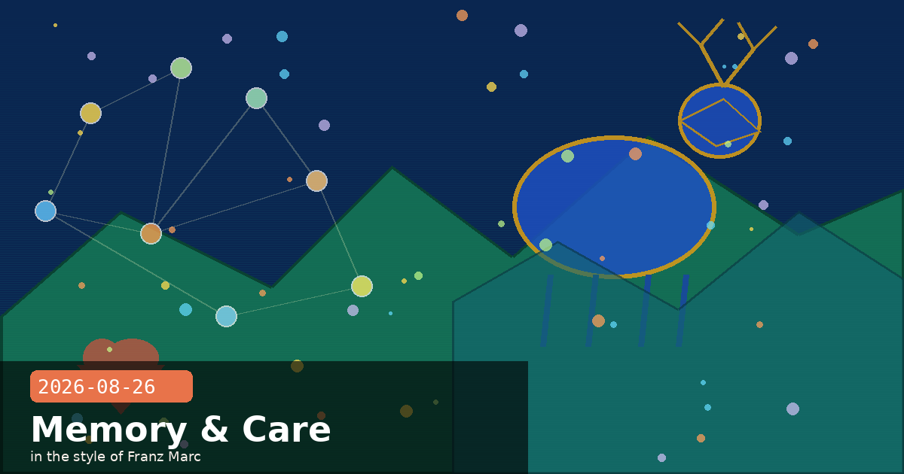

Claude Code 2.1.246, Unified Memory, and a $5M Wellbeing Grant

🧭 Claude Code v2.1.246: Bash Wildcard Warnings, Auto-Mode Classifier Tab, and Transcript Speed Fix
Claude Code v2.1.246 landed on August 26, adding a security nudge for over-permissive Bash rules, a new interface for managing auto-mode behaviour, and a fix for a performance regression that could make the terminal crawl on outputs containing very long lines.
Security: wildcard Bash allow-rule warning
Claude Code now prints a startup warning when it detects a Bash allow rule whose wildcard appears before the subcommand position — for example git * instead of git push *. Such a rule unintentionally permits every subcommand, including destructive ones. The warning does not block execution but surfaces the issue before a session begins, when it is easiest to fix.
Review your allow rules now
Open .claude/settings.json (or settings.local.json) and check every entry under "allow". Rules like "Bash(git *)" or "Bash(npm *)" permit any argument — including git push --force or npm publish. Tighten them to the exact subcommand you intend: "Bash(git diff *)", "Bash(git log *)". This is one of the highest-value security hygiene checks you can do on a shared Claude Code setup.
New Auto-mode tab in /permissions
The /permissions command now has a dedicated Auto mode tab showing the classifier rules that govern what Claude Code can do without a confirmation prompt. You can view, add, and remove rules interactively — no more hand-editing JSON to adjust which tool calls auto-mode approves. This makes it practical to tune auto-mode behaviour per project.
Performance: transcript slowdown with long lines fixed
A severe rendering regression caused the terminal UI to stall when processing outputs containing very long single lines — most commonly base64-encoded strings, minified JS, or binary data piped through Bash. The fix lands in v2.1.246 and the problem is gone without any configuration change.
Other fixes
Background sessions — fixed failures that occurred when the session's starting directory was deleted or the machine entered sleep mid-session.
MCP tool arguments — corrected a bug where tool arguments were sent as JSON strings (a quoted blob) when the parameter schema was empty, rather than as the empty object the server expected.
/fork — fixed the command starting with an empty conversation rather than forking from the current state.
Slash-menu duplicates — corrected duplicate skill names appearing when multiple MCP servers registered the same skill.
Bash latency — improved tool latency by replaying snapshot functions rather than re-evaluating the shell environment on each call.
Subagent partial output — subagents that hit maxTurns now surface their partial output to the parent session rather than returning nothing.
🧭 Claude Memory Now Works Across Chat and Cowork — and You Control Every Topic
Anthropic has shipped a significant update to how Claude's memory works: memory is now shared uniformly across the chat interface and Cowork (the desktop agentic client), with a new user-controlled management interface and a first-time opt-in system for sensitive topic categories.
What changed
One memory, everywhere — previously, preferences told to Claude in chat were not known in Cowork and vice versa. As of this release, any fact Claude adds to memory during a chat session is available in the next Cowork session, and vice versa. The context you build up is no longer siloed by interface.
Real-time capture — memory is updated during a conversation rather than by summarising after it ends. Mention that your project deadline shifted to September, and the next conversation already knows without you repeating yourself.
Browsable topic list — everything Claude remembers is listed under Topics in Settings → Memory. Each topic is a small file you can read, edit, or delete individually. There is no opaque summary blob — every retained fact is inspectable.
Sensitive topic opt-in — by default, Claude does not store sensitive categories: health conditions, race, ethnicity, gender identity, religion, or political beliefs. A toggle in Settings enables storage of these topics if you want them. Each time Claude adds a sensitive-topic memory, you receive a notification.
Privacy architecture note
The opt-in design for sensitive categories reflects a deliberate trade-off: personalisation is valuable, but unsolicited storage of health or belief data creates risk if an account is accessed by another person or if data is included in training pipelines without clear consent. The default-off stance, with per-notification acknowledgement on opt-in, gives users meaningful control rather than burying consent in terms of service.
Practical: what to add to memory intentionally
The most durable memory items are stable, factual, and context-agnostic: your preferred programming language, your project's naming conventions, your timezone, your role in a team. Avoid relying on memory for volatile state like "the current sprint goals" — update those explicitly each session. You can always say "Remember that our API uses snake_case for all field names" to add a fact immediately, then verify it under Settings → Memory.
Memory is on by default for Free, Pro, and Max plans on web, desktop, and mobile.
🧭 Anthropic Opens $5M Grant Programme for AI Wellbeing Research
Anthropic has announced a $5 million grant programme to fund independent research into how AI affects user wellbeing — an area the company identifies as critically under-evaluated despite growing real-world impact.
Why this gap exists
Standard safety benchmarks evaluate single responses to single prompts. Wellbeing harms — over-reliance, inappropriate companionship, mishandled mental-health conversations — are multi-turn, context-dependent phenomena that simple benchmarks cannot capture. As Anthropic puts it: "as an industry, we are still working towards developing clear standards for how models should behave" when a user begins seeking emotional support or navigating a mental health crisis through an AI.
What funded research must do
Grantees must produce open-source evaluations and benchmarks. Anthropic specifies five criteria for rigorous work:
Clear pass/fail standards — what does "good" look like, and how is it measured?
Clinical expert involvement — design and validation must draw on domain specialists, not just AI researchers.
Balanced scope — evaluations must test both overcompliance risks (model telling a user what they want to hear) and underprotection harms (model failing to refer a user in crisis).
Realistic scenarios — multi-turn conversations reflecting actual usage patterns, not synthetic single-turn prompts.
Expert grader validation — automated graders must be calibrated against real specialists.
What grantees receive
Direct funding, access to Anthropic's models for research, and technical support. Grantees maintain full independence and are expected to publish all work as open-source, making the resulting benchmarks available for the entire AI industry to use.
Applying? Key dates
Application deadline: September 21, 2026. Notification for full proposals: October 5, 2026. Teams working on AI safety evaluation, clinical psychology, human-computer interaction, or responsible AI should examine the programme — the combination of model access and cash funding is rare for external researchers.